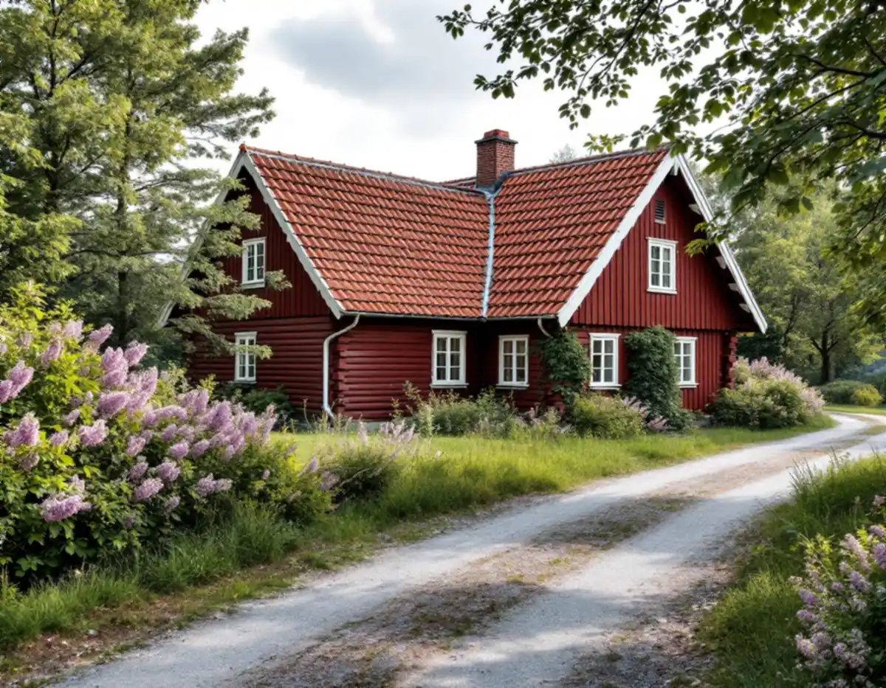
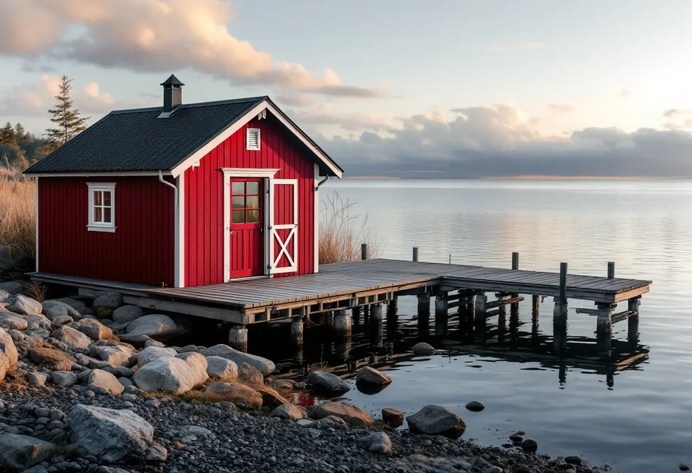
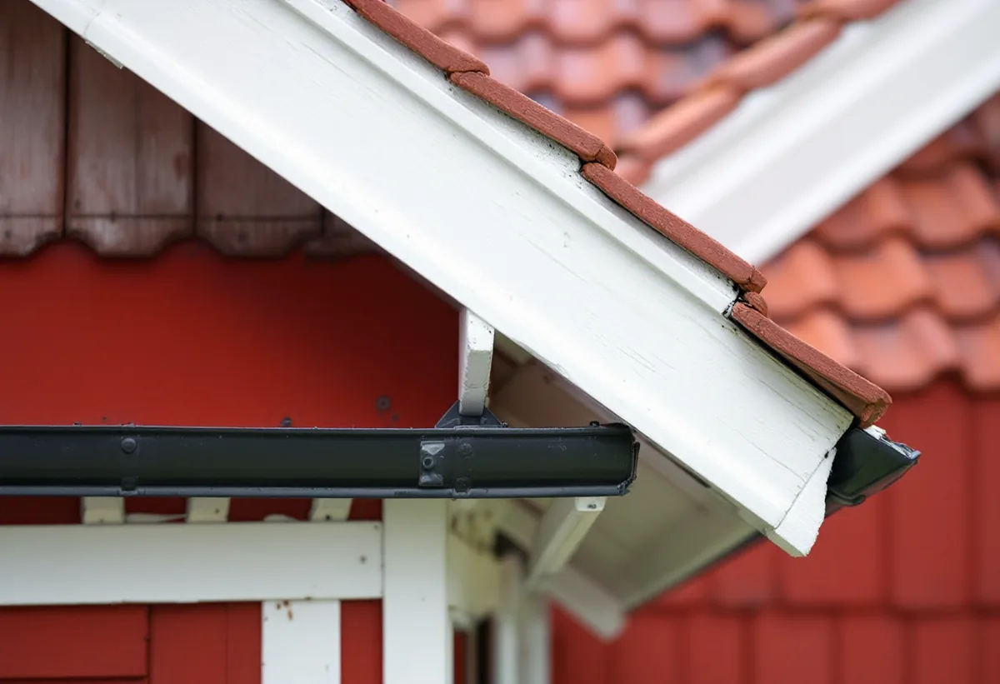

Kartor och plan
Kulturmiljökartan och detaljplanen kontrolleras för fastigheten.
Att lägga samma sorts pannor igen räknas normalt som underhåll. På Värmdö kan även ett sådant takbyte kräva en anmälan, om huset är skyddat eller har ett särskilt bevarandevärde. Geal Entreprenad AB byter tak på Värmdö och går igenom husets ställning i kommunens kartor innan materialet beställs.

Boverket skiljer mellan att byta till ett annat taktäckningsmaterial, som är en fasadändring, och att byta till samma material och utförande, som räknas som underhåll. På ett en- eller tvåbostadshus krävs normalt inget bygglov för något av dem. Värmdö kommun skriver dock att du behöver göra en anmälan och få startbesked om du ska underhålla en byggnad som är skyddad i detaljplanen eller har ett särskilt bevarandevärde.
I vissa fall behövs fler tillstånd, till exempel strandskyddsdispens eller tillstånd från länsstyrelsen, även när åtgärden inte kräver bygglov. Är huset ett byggnadsminne krävs länsstyrelsens tillstånd innan det ändras. Därför tittar vi först på planen och kartorna, och sedan på pannorna.

Med ändringarna i plan- och bygglagen från den 1 december 2025 blev det enklare att bygga utan lov på många håll, men kraven skärptes i riksintressen och kulturhistoriskt värdefulla miljöer. Där gäller lovplikt, skriver kommunen. På Värmdö finns 14 områden av riksintresse och cirka 55 utpekade kulturmiljöområden, och alla räknas som särskilt värdefulla. Om fastigheten berörs syns i kommunens kulturmiljökarta.
Särskilt värdefulla byggnader får inte förvanskas, oavsett om bygglov krävs eller inte. När något ska ändras i en kulturmiljö råder kommunen dig att tänka särskilt på material och byggnadssätt, färger och takets form och lutning. Kommunantikvarien ger tips och råd, och kommunen föreslår att du först tar en promenad i området och fotograferar din fastighet. Om plåtdetaljer i blåsiga lägen kan du läsa under plåtslagare på Värmdö.
Kulturmiljöprogrammet beskriver byarna på Runmarö, och taken återkommer i texten. I Uppeby täcks flera av de knuttimrade husen av tegelklädda sadeltak. I Nore, där August Strindberg tillbringade sommaren 1889 i en parstuga med brutet tak, är taken täckta med tegelpannor. I Norrsunda och Södersunda är tegel det dominerande taktäckningsmaterialet, och många sjöbodar och båthus har tak av tegelpannor eller plåt. I Vånö är tegel eller plåt de vanligaste materialen.
För den som byter tak i en sådan by blir frågan sällan vilket material som är modernast, utan vad som redan finns på huset och grannhusen. Ett hus med tegel bör kunna få tegel igen, och en sjöbod med plåt kan få ny plåt. Om hus som byggs om för helårsboende kan du läsa under takrenovering på Värmdö.
Programmets ordlista är ett bra stöd när taket ska beskrivas i en ansökan eller ett kostnadsförslag. Ett sadeltak har två takfall som sluttar från varandra, ett upp och ned vänt V. Ett brutet tak har takfall som bryts och får en brantare nedre del, och mansardtaket beskrivs som ett sadeltak som från ungefär två tredjedelar ned från nocken sluttar brantare. Ett valmat tak avslutas på kortsidorna med ett sluttande parti, och ett säteritak är valmat och brutet av ett lågt vertikalt parti. Ett pulpettak har ett enda takfall.
Ordlistan förklarar också falsat plåttak som taktäckning av tunnplåt som sammanfogas genom att kanterna böjs om, takfoten som den del av fasaden där tak och yttervägg möts och takutsprånget som den del av takfallet som skjuter ut över fasadlivet. Det är ofta just takfot och utsprång som avslöjar om ett nytt tak har lagts med samma mått som det gamla. Mer om våra tjänster finns under takläggare på Värmdö och om bytet i stort under takbyte.

Kulturmiljökartan och detaljplanen kontrolleras för fastigheten.
Vi mäter takfot och utsprång och noterar material, takform och skick.
Vi tar fram uppgifterna om material och utförande som ärendet kräver.
Rivning, underlag, ytskikt, plåt och ställning står var för sig.
Taket läggs med samma takfot och utsprång som tidigare, om inget annat är beslutat.
Vi går igenom det färdiga taket och detaljerna med dig.
Rotavdrag ges för arbete i både permanentbostad och fritidshus som du äger och helt eller delvis bor i. Skatteverket räknar byte av takpannor, plåttak, hängrännor och stuprör på ett småhus som rotarbete, och komplementhus som förråd och andra mindre byggnader kan höra till småhuset.
Avdraget är högst 30 procent av arbetskostnaden, högst 50 000 kr per person och år och högst 75 000 kr tillsammans med rutavdrag. Material och resor ger inget avdrag. Geal drar det direkt på fakturan.
Takets yta och form, om flera byggnader på tomten ska få nytt tak, materialet, hur mycket råspont som behöver bytas, plåtarbetena och hur ställning och material kan komma fram till huset. Läs mer i vad kostar ett takbyte. Efter ett gratis platsbesök får du ett skriftligt kostnadsförslag.
Byte av tegel-, betong- och plåttak.
Takbyte →Takbyte, takbesiktning och plåtarbeten.
Takläggare på Värmdö →Skärgård, vind och fritidshus.
Takrenovering på Värmdö →Fritidsområden, kulturmiljö och avlopp.
Attefallshus på Värmdö →Brunnsvatten, salt och eget avlopp.
Badrumsrenovering på Värmdö →Byggrätt, PFO-områden och strandskydd.
Byggföretag på Värmdö →Röd panel, vita snickerier och båthus i skärgårdsbyarna.
Fasadmålning på Värmdö →Sommarvillor, skyddade hus och helårsboende.
Fasadrenovering på Värmdö →Gustavsbergs bevarandevärda fönster.
Fönsterbyte på Värmdö →Glasverandor och äldre fönster.
Fönsterrenovering på Värmdö →Fritidshus som blir permanentbostäder.
Golvläggare på Värmdö →Fritidshus, eget avlopp och Gustavsberg.
Köksrenovering på Värmdö →Plåttak och beslag på Värmdö.
Plåtslagare på Värmdö →Fritidshus som blir helårshus.
Snickare på Värmdö →Skärgårdshus, fritidshus och bruksmiljö på Värmdö.
Målare på Värmdö →Fritidshusplaner och lovfria 30 m².
Tillbyggnad på Värmdö →